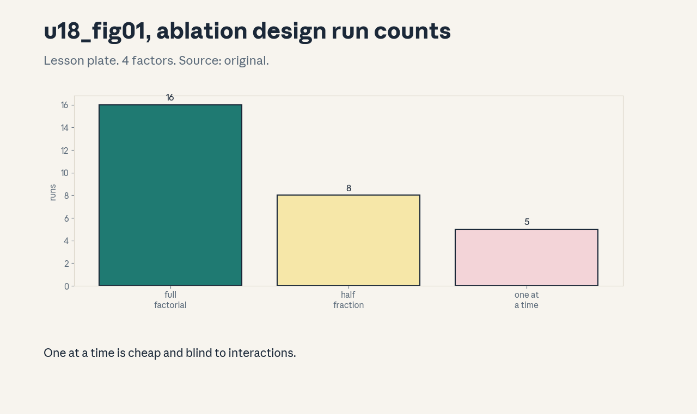
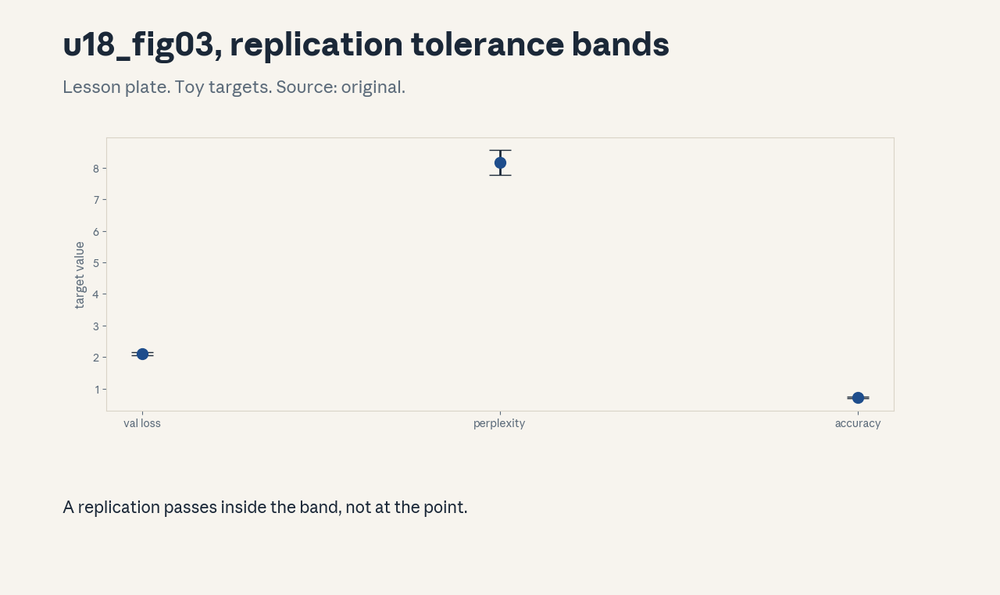

U18 · Guest material and final research defense
U18 , Guest material and final research defense
Prerequisites: P22, P24. Bridge links in ../prerequisites.md.
Sessions: G1 (reported Jun 1, guest: Daniel Selsam), G2 (reported
Jun 3, guest: Dan Fu). No artifacts inspected, content unknown.
See ../source_gaps.md G-08. Do not infer content from speaker
names. Full map in ../course_map.md.
Claim class: REQUESTED-BRANCH. All leaves PLANNED / SOURCE ATTRIBUTION
PENDING. Notation: see ../notation_and_shapes.md.
Standing note
The two guest lectures are unresolved sources: titles, artifacts,
and content are unknown (source_gaps.md G-08). This unit teaches
the honesty protocol for unknown sources plus the final research
defense: the completed independent LM, its ablations, its failure
diary, and its oral defense. Numbers from assets/compute_u18.py
(synthetic toys, executed 2026-10-06).
Russian-doll map
Shells 0-1 in items 1-2, shells 2-3 in items 3-6, shell 4 in item 7, shell 5 in item 8, shell 6 in item 9, shell 7 in item 11, shell 8 in item 10, shell 9 in item 12, shell 10 in item 13(c). The depth gate is checked by item 13.
Local remediation , the honesty protocol
Read this if the source-grounding rules were not full marks. An
uninspected source is not a covered source. The protocol: name the
source, state what is known (title/date/speaker from the secondary
schedule), state what is unknown (everything else), and never fill
the gap from the speaker’s reputation. Toy from compute_u18.py:
guest artifacts inspected: 0. Assessment: list the three
sentences of the protocol from memory. Key: ../keys/u18_answers.md
R1.
C01: Identify both guest lectures
Leaf id cs336-U18-C01. Claim class REQUESTED-BRANCH.
Status PLANNED / SOURCE ATTRIBUTION PENDING.
-
Source mapping, scope, objectives, dependencies. Branch. Scope: placing G1 and G2 on the map. Objectives: state the reported facts, mark the unknowns. Depends on P22.
-
Motivating question and toy. Question: what are the two guest lectures? Reported (secondary schedule, not official): G1 Jun 1, Daniel Selsam. G2 Jun 3, Dan Fu. Titles, slides, recordings: unknown.
-
Mental model. The schedule is a pointer, not a source. The pointer says when and who, it says nothing about what was taught.
-
Objects, symbols, units, shapes, assumptions. Session ids G1, G2 with reported dates. Assumption: the secondary schedule is accurate about dates.
-
Derivation / mechanism. No derivation, it is a record. The record separates reported facts from inspected ones.
-
Computed example. Session check from
compute_u18.py: 17 core + 2 guest = 19. Both guests appear exactly once. -
Algorithm and reference implementation. A source record: id, reported date, reported speaker, artifacts inspected (0), content (unknown). Text template.
-
Correctness checks and expected output. The count reconciles to 19. No content field is filled.
-
Costs. Leaving the gap open costs completeness. Filling it with guesses costs integrity.
-
Nearest alternative and selection boundary. Guess from the speaker’s work (forbidden). Leave unknown (the honest choice) until artifacts appear.
-
Failure case and counterexample. A later artifact surfaces: the record updates with inspection extent. The assumption “unknown forever” is provisional, not permanent.
-
Research reading and falsifiable extension. Reading: none available, that is the point. Extension: when an artifact appears, run the anti-omission audit (course prompt) on it.
-
Assessment. (a) Recall: the reported facts. (b) Oral ladder: state the facts, mark the unknowns, justify the separation, write the record, compare with guessing, handle the surfacing artifact, critique the schedule’s authority, design the audit. (c) Transfer: a third guest is rumored. What do you record? Answers:
../keys/u18_answers.mdA1. -
Lab and exercises. Lab U18 task 1 writes the records. See
../labs/u18_lab.md. -
Visuals. No dedicated figure. No unresolved conflict.
C02: Obtain actual titles/artifacts
Leaf id cs336-U18-C02. Claim class REQUESTED-BRANCH.
Status PLANNED / SOURCE ATTRIBUTION PENDING.
-
Source mapping, scope, objectives, dependencies. Branch. Scope: the retrieval procedure. Objectives: list where to look, what counts as obtained. Depends on C01.
-
Motivating question and toy. Question: how would you actually get the guest material? Channels: the course site, the lecture repository, the speaker’s page, archived schedules. “Obtained” means bytes on disk with a recorded inspection extent, not a remembered title.
-
Mental model. Retrieval is evidence collection. Each channel either yields an artifact (record its extent) or it does not (record the attempt and the date).
-
Objects, symbols, units, shapes, assumptions. Attempt log: channel, date, result. Assumption: public channels only, no auth bypass.
-
Derivation / mechanism. No derivation, it is a procedure. Try channels in order, log everything.
-
Computed example. Toy log: course site (2026-10-06, no guest page), lecture repo (2026-10-06, no guest files), speaker page (2026-10-06, no slides). Three attempts, zero artifacts: the honest state.
-
Algorithm and reference implementation.
attempt_log: append (channel, date, result). Text. -
Correctness checks and expected output. The log shows due diligence, not success theater.
-
Costs. Retrieval attempts cost time. Stopping early costs the source.
-
Nearest alternative and selection boundary. Ask the speaker directly (polite, may work). Public channels first for the record.
-
Failure case and counterexample. A paywalled recording appears: access without rights is forbidden. The assumption “public means accessible” breaks, record the barrier.
-
Research reading and falsifiable extension. Reading: none. Extension: re-run the channels quarterly, hypothesis: artifacts sometimes surface late.
-
Assessment. (a) Recall: the channels and the log. (b) Oral ladder: list the channels, define “obtained”, justify the log, write an entry, compare with asking directly, handle the paywall, critique the effort, design the re-run. (c) Transfer: slides surface but the recording does not. Record the state. Answers:
../keys/u18_answers.mdA2. -
Lab and exercises. Lab U18 task 2 logs attempts. See
../labs/u18_lab.md. -
Visuals. No dedicated figure. No unresolved conflict.
C03: Do not infer content from speaker name
Leaf id cs336-U18-C03. Claim class REQUESTED-BRANCH.
Status PLANNED / SOURCE ATTRIBUTION PENDING.
-
Source mapping, scope, objectives, dependencies. Branch. Scope: the anti-inference rule. Objectives: state the rule, show why it matters with a counterexample. Depends on C01.
-
Motivating question and toy. Question: the speaker is famous for X. Did the lecture cover X? Unknown. Speakers surprise: the rule forbids filling the gap from reputation, publication lists, or “what they usually talk about”.
-
Mental model. The name is not the content. Inference from the name is a prior with no likelihood: it never updates, so it never becomes knowledge.
-
Objects, symbols, units, shapes, assumptions. The rule: no content claims without artifacts. Assumption: none.
-
Derivation / mechanism. No derivation, it is a prohibition. Every content sentence needs an artifact anchor or it is deleted.
-
Computed example. Counterexample: a systems researcher gives a guest lecture on evaluation methodology. The reputation-based guess (“it was about systems”) is wrong, and wrong confidently.
-
Algorithm and reference implementation. A lint rule: scan the unit for content claims about G1/G2, require an artifact id per claim. Text.
-
Correctness checks and expected output. Zero content claims about the guests survive the lint.
-
Costs. The rule leaves the unit thin. Thin and honest beats thick and invented.
-
Nearest alternative and selection boundary. Labeled speculation (“if the lecture were about X…”) for teaching, clearly marked. Never as fact.
-
Failure case and counterexample. Labeled speculation drifts into the notes as fact over time. The assumption “labels persist” breaks, re-lint on every edit.
-
Research reading and falsifiable extension. Reading: none. Extension: audit this unit for violations. hypothesis: zero found.
-
Assessment. (a) Recall: the rule. (b) Oral ladder: state the rule, give the counterexample, justify the prohibition, run the lint, compare with labeled speculation, handle label drift, critique the thinness, design the audit. (c) Transfer: a student asks what the guest taught. Answer in two sentences. Answers:
../keys/u18_answers.mdA3. -
Lab and exercises. Lab U18 task 3 lints the unit. See
../labs/u18_lab.md. -
Visuals. No dedicated figure. No unresolved conflict.
C04: Reconcile nineteen sessions
Leaf id cs336-U18-C04. Claim class REQUESTED-BRANCH.
Status PLANNED / SOURCE ATTRIBUTION PENDING.
-
Source mapping, scope, objectives, dependencies. Branch. Scope: the full session accounting. Objectives: verify 17+2 = 19 with zero omissions and zero double-mapping. Depends on P22.
-
Motivating question and toy. Question: is every session taught somewhere? Toy from
compute_u18.py: 17 core + 2 guest = 19. The course map assigns each session to units. the only documented double-mapping is the S07 pipeline split. -
Mental model. Reconciliation is record-keeping: every session has exactly one home (or a documented split), every unit lists its sessions. The auditor’s first check.
-
Objects, symbols, units, shapes, assumptions. Session count 19. Assumption: the secondary schedule’s session list.
-
Derivation / mechanism. Count sessions per unit, sum, compare to 19, list exceptions.
-
Computed example. From
assets/compute_u18.py(executed 2026-10-06): 17 + 2 = 19. -
Algorithm and reference implementation.
reconcile(map): count and diff. About 8 lines. -
Correctness checks and expected output. Total 19, no session unmapped, the S07 split documented.
-
Costs. Reconciliation is cheap, the cost is in fixing what it finds.
-
Nearest alternative and selection boundary. Trust the map (fast, blind). Reconcile (the audit standard).
-
Failure case and counterexample. A session hides inside another unit’s lesson without a map entry: the count is right, the mapping is wrong. The assumption “count suffices” breaks, check the mapping too.
-
Research reading and falsifiable extension. Reading: the course map itself. Extension: re-run reconciliation after every unit edit, hypothesis: it stays at 19.
-
Assessment. (a) Recall: the count and the exception. (b) Oral ladder: define reconciliation, verify the toy, justify the mapping check, implement
reconcile, compare with trust, debug the hidden-session case, critique the schedule source, design the re-run. (c) Transfer: a new session is discovered. Update the books. Answers:../keys/u18_answers.mdA4. -
Lab and exercises. Lab U18 task 4 reconciles. See
../labs/u18_lab.md. -
Visuals. No dedicated figure. No unresolved conflict.
C05: Completed independent LM
Leaf id cs336-U18-C05. Claim class REQUESTED-BRANCH.
Status PLANNED / SOURCE ATTRIBUTION PENDING.
-
Source mapping, scope, objectives, dependencies. Branch. Scope: the capstone model as a defense artifact. Objectives: state what “completed” means, list the deliverables. Depends on U01-U17.
-
Motivating question and toy. Question: what does the learner hand in? A trained tiny LM plus: the data manifest (U13-C12), the training config, the eval report (U12), the ablation matrix (C06), the failure diary (C07), and the resource ledger (C08).
-
Mental model. The model is the least important part, the evidence around it is the defense. Anyone can train, the defense proves understanding.
-
Objects, symbols, units, shapes, assumptions. Deliverable checklist. Assumption: numpy-CPU scale toys.
-
Derivation / mechanism. No derivation, it is a definition of done. Every item has a location and a verification.
-
Computed example. Toy checklist: 12 items, each with a path. The capstone in
../capstones/follows this list. -
Algorithm and reference implementation. The checklist itself. Text.
-
Correctness checks and expected output. All 12 items present. The eval report reproduces from the manifest.
-
Costs. The evidence costs more effort than the training. That is the point.
-
Nearest alternative and selection boundary. Model-only hand-in (fast, indefensible). Full evidence for the defense.
-
Failure case and counterexample. The model trains but the manifest is absent: the result is irreproducible and the defense fails. The assumption “the model is enough” breaks.
-
Research reading and falsifiable extension. Reading: the course project requirements (as reported). Extension: audit the capstone against the checklist, hypothesis: all 12 present.
-
Assessment. (a) Recall: the checklist. (b) Oral ladder: define done, list the items, justify the evidence-first view, write the checklist, compare the two hand-ins, debug the missing-manifest case, critique the cost, design the audit. (c) Transfer: the learner’s model beats the baseline. What do you check first? Answers:
../keys/u18_answers.mdA5. -
Lab and exercises. Lab U18 task 5 assembles the checklist. See
../labs/u18_lab.md. -
Visuals. No dedicated figure. No unresolved conflict.
C06: Ablation matrix
Leaf id cs336-U18-C06. Claim class REQUESTED-BRANCH.
Status PLANNED / SOURCE ATTRIBUTION PENDING.
-
Source mapping, scope, objectives, dependencies. Branch. Scope: designed experiments over the build choices. Objectives: compare full factorial, fractional, and one-at-a-time designs on a toy. Depends on U14-C11, P22.
-
Motivating question and toy. Question: 4 build choices, which design? Toy from
compute_u18.py: full factorial 16 runs, half-fraction 8 runs, one-at-a-time 5 runs. OAT is cheapest and blind to interactions. -
Mental model. The design trades runs against interaction visibility. Factorial sees everything. OAT sees main effects only, fractional sees main effects plus some interactions by aliasing.
-
Objects, symbols, units, shapes, assumptions. Run counts. Assumption: 4 two-level factors.
-
Derivation / mechanism. Full: 2^4 = 16. Half-fraction: 2^{4-1} = 8. OAT: 1 + 4 = 5.
-
Computed example. From
assets/compute_u18.py(executed 2026-10-06): 16, 8, 5. -
Algorithm and reference implementation.
design_runs(n, kind): the counts. Three lines. -
Correctness checks and expected output. The counts match the formulas. Fractional aliases are documented.
-
Costs. Runs are the currency. Interactions are the information.
-
Nearest alternative and selection boundary. OAT for screening. Factorial or fractional for the defense.
-
Failure case and counterexample. The key interaction is aliased with a main effect in the fractional design: the conclusion is wrong. The assumption “aliasing is safe” breaks, choose the fraction to protect suspected interactions.
-
Research reading and falsifiable extension. Reading: the design-of-experiments texts (secondary). Extension: simulate a true interaction on the toy, hypothesis: OAT misses it, factorial finds it.
-
Assessment. (a) Recall: the three designs. (b) Oral ladder: define each, read the toy, justify the counts, implement
design_runs, compare the designs, debug the aliasing case, critique the toy, design the simulation. (c) Transfer: 6 factors, budget 20 runs. Design. Answers:../keys/u18_answers.mdA6. -
Lab and exercises. Lab U18 task 6 designs the matrix. See
../labs/u18_lab.md. -
Visuals. Figure u18_fig01: run-count bars. Source: original. Render:
assets/render_u18.py.

C07: Failure diary
Leaf id cs336-U18-C07. Claim class REQUESTED-BRANCH.
Status PLANNED / SOURCE ATTRIBUTION PENDING.
-
Source mapping, scope, objectives, dependencies. Branch. Scope: the log of what went wrong. Objectives: keep the diary, show why it matters. Depends on P22.
-
Motivating question and toy. Question: the run failed three times before it worked. Where is that recorded? The failure diary: date, symptom, hypothesis, fix, lesson. The course
errors.mdis this unit’s diary. -
Mental model. Failures are data. The diary turns “it broke” into “it broke this way, fixed by that”. The defense reads the diary to judge the builder’s honesty.
-
Objects, symbols, units, shapes, assumptions. Diary entries with five fields. Assumption: entries written at the time, not reconstructed.
-
Derivation / mechanism. No derivation, it is a habit. Write the entry when the failure happens.
-
Computed example. Toy entry: 2026-10-06, NaN loss, hypothesis LR too high, fix LR/10, lesson: check loss after 10 steps.
-
Algorithm and reference implementation. The entry template. Text.
-
Correctness checks and expected output. Every failed run has an entry. Lessons feed back into the pipeline.
-
Costs. Writing takes minutes. Reconstructing from memory takes hours and lies.
-
Nearest alternative and selection boundary. No diary (fast, amnesiac). Diary for anything that must be defended.
-
Failure case and counterexample. The diary blames the tools for every failure: it becomes fiction. The assumption “entries are honest” breaks, review the diary with a peer.
-
Research reading and falsifiable extension. Reading: the lab-notebook practices (secondary). Extension: audit the course errors.md, hypothesis: every entry has all five fields.
-
Assessment. (a) Recall: the five fields. (b) Oral ladder: define the diary, write the toy entry, justify contemporaneous writing, use the template, compare the habits, debug the blame case, critique the cost, design the audit. (c) Transfer: three failed runs, no diary. What is lost? Answers:
../keys/u18_answers.mdA7. -
Lab and exercises. Lab U18 task 7 keeps a diary. See
../labs/u18_lab.md. -
Visuals. No dedicated figure. No unresolved conflict.
C08: Resource ledger
Leaf id cs336-U18-C08. Claim class REQUESTED-BRANCH.
Status PLANNED / SOURCE ATTRIBUTION PENDING.
-
Source mapping, scope, objectives, dependencies. Branch. Scope: accounting for the project’s compute. Objectives: total the ledger, include failures. Depends on U02.
-
Motivating question and toy. Question: what did the project cost? Toy from
compute_u18.py: 480 GPU-hours at a toy $2.50 = $1,200 compute. 1,200 GB storage. 3 failed runs at 40 GPU-hours each included in the total. -
Mental model. The ledger is the project’s receipt: compute, storage, failures, all counted. “How much did it cost” is a defense question with a numeric answer.
-
Objects, symbols, units, shapes, assumptions. GPU- hours, dollars, GB. Assumption: the toy rate and counts.
-
Derivation / mechanism. Total = sum over runs of (hours x rate) + storage. Failed runs count: they consumed real resources.
-
Computed example. From
assets/compute_u18.py(executed 2026-10-06): $1,200, 1,200 GB, 120 failed GPU-hours inside the 480. -
Algorithm and reference implementation.
ledger(runs): sum the costs. About 6 lines. -
Correctness checks and expected output. The total matches the sum of parts. Failures are itemized, not hidden.
-
Costs. Tracking costs attention. Not tracking costs the ability to plan the next project.
-
Nearest alternative and selection boundary. Rough estimates (fast, wrong). Ledger for the defense and for planning.
-
Failure case and counterexample. Failed runs are omitted: the ledger understates by 25% on the toy. The assumption “only successes count” breaks, count everything.
-
Research reading and falsifiable extension. Reading: the compute-accounting practices (secondary). Extension: recompute the toy without failures, hypothesis: the total falls exactly $300.
-
Assessment. (a) Recall: the ledger fields. (b) Oral ladder: define the ledger, compute the toy, justify counting failures, implement
ledger, compare with estimates, debug the omission case, critique the toy rate, design the recompute test. (c) Transfer: the next project is 10x. Budget it from the ledger. Answers:../keys/u18_answers.mdA8. -
Lab and exercises. Lab U18 task 8 totals the ledger. See
../labs/u18_lab.md. -
Visuals. No dedicated figure. No unresolved conflict.
C09: Replication protocol
Leaf id cs336-U18-C09. Claim class REQUESTED-BRANCH.
Status PLANNED / SOURCE ATTRIBUTION PENDING.
-
Source mapping, scope, objectives, dependencies. Branch. Scope: letting someone else redo the work. Objectives: write the protocol, set the tolerance bands. Depends on P22.
-
Motivating question and toy. Question: a peer reruns your pipeline. When do they confirm you? Toy from
compute_u18.py: bands are val loss 2.10 +- 0.05, perplexity 8.17 +- 0.40, accuracy 0.72 +- 0.03. Inside all three: replicated. -
Mental model. Replication is not repetition of the exact bits, it lands inside the bands with an independent run. The bands come from the seed variation (U12-C09), not from optimism.
-
Objects, symbols, units, shapes, assumptions. Tolerance bands per metric. Assumption: the toy targets and bands.
-
Derivation / mechanism. Bands = target +- k*SE from the seed study. k=2 is the common choice.
-
Computed example. From
assets/compute_u18.py(executed 2026-10-06): the three bands above. -
Algorithm and reference implementation.
replicated (results, bands): all-inside check. About 6 lines. -
Correctness checks and expected output. The toy’s own seeds pass. A shifted result fails exactly the shifted metric.
-
Costs. The seed study costs runs. The protocol document costs writing.
-
Nearest alternative and selection boundary. “It worked on my machine” (worthless). Banded protocol for any claim.
-
Failure case and counterexample. The protocol omits the data manifest: the peer trains on different data and “fails to replicate” a correct result. The assumption “the protocol is complete” breaks, include the manifest (U13-C12).
-
Research reading and falsifiable extension. Reading: the reproducibility checklists (secondary). Extension: run the toy protocol on perturbed seeds, hypothesis: pass rate near 95%.
-
Assessment. (a) Recall: the band rule. (b) Oral ladder: define replication, read the toy, justify the bands, implement the check, compare with bit-equality, debug the missing-manifest case, critique the toy, design the perturbation test. (c) Transfer: two of three metrics pass. Replicated? Answers:
../keys/u18_answers.mdA9. -
Lab and exercises. Lab U18 task 9 writes the protocol. See
../labs/u18_lab.md. -
Visuals. Figure u18_fig03: the tolerance bands. Source: original. Render:
assets/render_u18.py.

C10: Scale limitations
Leaf id cs336-U18-C10. Claim class REQUESTED-BRANCH.
Status PLANNED / SOURCE ATTRIBUTION PENDING.
-
Source mapping, scope, objectives, dependencies. Branch. Scope: stating what the small build does not prove. Objectives: list the scale gaps, state the claim boundary. Depends on U10-C12, U17-C12.
-
Motivating question and toy. Question: the tiny LM works. Does the recipe scale to 70B? Unknown from this evidence: the toy ran on CPU with synthetic data. The honest statement names the gaps: no distributed run, no real data at scale, no long-context test.
-
Mental model. Every result carries its scale label. The defense states the label and refuses to extrapolate past it without staged evidence (U10-C12).
-
Objects, symbols, units, shapes, assumptions. Scale labels: params, tokens, hardware. Assumption: none beyond honesty.
-
Derivation / mechanism. No derivation, it is a boundary statement. List what was run, list what was not, draw the line.
-
Computed example. Toy: run at 1M params, claim boundary at 1M params. The 70B claim is marked “not evidenced”.
-
Algorithm and reference implementation. The boundary table: claim, evidence scale, status. Text.
-
Correctness checks and expected output. Every claim in the report has a row. No row says “scales” without staged evidence.
-
Costs. Honesty costs impressive-sounding claims. It buys credibility.
-
Nearest alternative and selection boundary. Bold extrapolation (exciting, fragile). Bounded claims for the defense.
-
Failure case and counterexample. The boundary is stated once and forgotten: later slides claim more. The assumption “the boundary persists” breaks, repeat it per claim.
-
Research reading and falsifiable extension. Reading: the scale-transfer literature (secondary). Extension: audit the capstone report, hypothesis: every number carries a scale label.
-
Assessment. (a) Recall: the boundary rule. (b) Oral ladder: define the limit, work the toy, justify the labeling, write the table, compare the postures, debug the forgotten-boundary case, critique the toy, design the audit. (c) Transfer: the report says “this scales to 70B”. Respond. Answers:
../keys/u18_answers.mdA10. -
Lab and exercises. Lab U18 task 10 draws boundaries. See
../labs/u18_lab.md. -
Visuals. Figure u18_fig02 shows the seed band: the honest uncertainty at the toy’s own scale. No unresolved conflict.
C11: Deployment/rollback bridge
Leaf id cs336-U18-C11. Claim class REQUESTED-BRANCH.
Status PLANNED / SOURCE ATTRIBUTION PENDING.
-
Source mapping, scope, objectives, dependencies. Branch. Scope: from trained model to safe serving. Objectives: name the deploy gates, write the rollback plan. Depends on P24, U11, U12.
-
Motivating question and toy. Question: the model passes the held-out gate (U16-C12). How does it reach users safely? Gates: canary on 1% traffic, metric comparison against the incumbent, automatic rollback on regression. The bridge is P24’s production discipline applied to the course artifact.
-
Mental model. Deployment is a controlled experiment, not a launch event. The rollback plan is written before the deploy, not during the incident.
-
Objects, symbols, units, shapes, assumptions. Canary fraction, rollback triggers. Assumption: the U12 metric suite.
-
Derivation / mechanism. No derivation, it is a runbook. Each trigger has a metric, a threshold, and an owner.
-
Computed example. Toy: canary 1% for 24h, rollback if error rate rises 0.5 points or latency p99 rises 20%.
-
Algorithm and reference implementation. The runbook table. Text.
-
Correctness checks and expected output. A rollback drill completes within the SLO.
-
Costs. Canaries cost engineering and time. Incidents cost more.
-
Nearest alternative and selection boundary. Big-bang deploy (fast, risky). Canary with rollback for anything user-facing.
-
Failure case and counterexample. The rollback itself is broken (old artifact deleted): the incident becomes an outage. The assumption “rollback works” breaks, drill it.
-
Research reading and falsifiable extension. Reading: the deployment literature (secondary). Extension: run a toy rollback drill, hypothesis: it meets the time budget.
-
Assessment. (a) Recall: the gates and the plan. (b) Oral ladder: define the bridge, work the toy, justify the canary, write the runbook, compare the strategies, debug the broken-rollback case, critique the toy, design the drill. (c) Transfer: the canary shows no regression but user complaints rise. Act. Answers:
../keys/u18_answers.mdA11. -
Lab and exercises. Lab U18 task 11 writes the runbook. See
../labs/u18_lab.md. -
Visuals. No dedicated figure. No unresolved conflict.
C12: Oral mechanism defense
Leaf id cs336-U18-C12. Claim class REQUESTED-BRANCH.
Status PLANNED / SOURCE ATTRIBUTION PENDING.
-
Source mapping, scope, objectives, dependencies. Branch. Scope: defending the work out loud. Objectives: survive the 8-step ladder on any mechanism in the course. Depends on all units.
-
Motivating question and toy. Question: the examiner points at your pipeline and asks “why this, not that?” The defense ladder: define, toy, derive, implement, compare, debug, critique, design. Toy rubric from
compute_u18.py: mechanism 30, evidence 25, limits 20, transfer 15, clarity 10. -
Mental model. The defense tests ownership: can you derive it, break it, and rebuild it? Memorized words fail at step 3, understanding survives to step 8.
-
Objects, symbols, units, shapes, assumptions. Rubric points. Assumption: closed-book, whiteboard.
-
Derivation / mechanism. No derivation, it is a performance. Preparation is the course itself, done honestly.
-
Computed example. Toy: a defense scoring 85/100 loses most points on limits (step 7): the classic profile.
-
Algorithm and reference implementation. The ladder as a practice drill: pick a concept, run the 8 steps aloud. Text.
-
Correctness checks and expected output. Every step gets an answer with a number or a derivation, never a slogan.
-
Costs. Preparation costs the whole course. There is no shortcut step.
-
Nearest alternative and selection boundary. Written exam (tests recall). Oral defense (tests ownership) for the final.
-
Failure case and counterexample. The defender memorizes the lesson text: step 6 (debug the broken case) exposes it. The assumption “fluency is comprehension” breaks under changed constraints.
-
Research reading and falsifiable extension. Reading: the oral-exam traditions (secondary). Extension: run the drill on U10-C03, hypothesis: the limits step is hardest.
-
Assessment. (a) Recall: the 8 steps. (b) Oral ladder: this is the ladder. Run it on the candidate’s weakest concept, then the strongest, then a random one. (c) Transfer: defend the entire U10-U18 arc in 10 minutes. Answers:
../keys/u18_answers.mdA12. -
Lab and exercises. Lab U18 task 12 runs the drill. See
../labs/u18_lab.md. -
Visuals. No dedicated figure. No unresolved conflict.